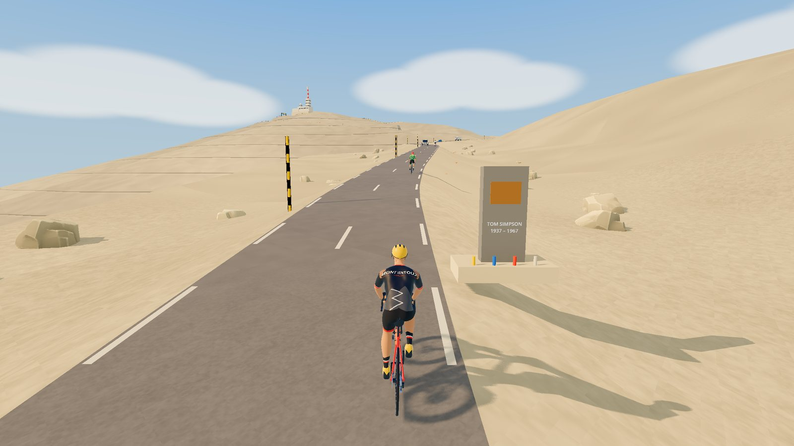

Mont Ventoux Online
Mont Ventoux Online1951
La première fois
Le Tour de France découvre le Mont Ventoux en montant par Malaucène, entre Montpellier et Avignon. Le Géant entre dans l'histoire du cyclisme.

Depuis 1951, le Géant de Provence a vu passer les plus grands. Des victoires de légende, des records, des drames : voici son histoire cycliste, à revivre sur votre home trainer connecté.
Le Tour de France est arrivé onze fois sur les pentes du Mont Ventoux : dix fois au sommet, une fois au Chalet Reynard.
| Année | Vainqueur de l'étape | L'étape |
|---|---|---|
| 1958 | Charly Gaul (Luxembourg) | Contre-la-montre Bédoin – Mont Ventoux. Gaul gagne aussi le Tour. |
| 1965 | Raymond Poulidor (France) | Montpellier – Mont Ventoux. |
| 1970 | Eddy Merckx (Belgique) | Gap – Mont Ventoux, en maillot jaune. |
| 1972 | Bernard Thévenet (France) | Carnon-Plage – Mont Ventoux. |
| 1987 | Jean-François Bernard (France) | Contre-la-montre Carpentras – Mont Ventoux. |
| 2000 | Marco Pantani (Italie) | Carpentras – Mont Ventoux. |
| 2002 | Richard Virenque (France) | Lodève – Mont Ventoux. |
| 2009 | Juan Manuel Gárate (Espagne) | Montélimar – Mont Ventoux, à la veille de l'arrivée à Paris. |
| 2013 | Chris Froome (Grande-Bretagne) | Givors – Mont Ventoux, en maillot jaune. |
| 2016 | Thomas De Gendt (Belgique) | Montpellier – Chalet Reynard : arrivée avancée à cause du vent. |
| 2025 | Valentin Paret-Peintre (France) | Montpellier – Mont Ventoux. |
Le Tour a aussi franchi le sommet sans y arriver, notamment en 1951 (première fois, Lucien Lazaridès en tête), 1952, 1955, 1967, 1974, 1994 et 2021.
Le Tour de France découvre le Mont Ventoux en montant par Malaucène, entre Montpellier et Avignon. Le Géant entre dans l'histoire du cyclisme.
Le grimpeur luxembourgeois gagne le contre-la-montre de Bédoin au sommet, en un peu plus d'une heure, et remporte le Tour quelques jours plus tard.
Le 13 juillet 1967, sous une chaleur écrasante, le champion britannique s'effondre à moins de deux kilomètres du sommet et meurt. Sa stèle, dans le pierrier au-dessus de Bédoin, est devenue un lieu de recueillement pour les cyclistes du monde entier : vous la croisez dans le jeu.
Eddy Merckx gagne au sommet en maillot jaune, mais s'écroule après la ligne : il faut lui donner de l'oxygène. Il remporte le Tour quelques jours plus tard.
Grand gabarit, rouleur peu fait pour la montagne, Eros Poli s'échappe de loin, passe le Ventoux en tête avec son avance et gagne l'étape à Carpentras.
Marco Pantani gagne au sommet au terme d'un duel resté célèbre. Les titres de Lance Armstrong de 1999 à 2005 ont depuis été retirés pour dopage.
Pour le 100e Tour, Chris Froome s'impose au sommet en maillot jaune, au bout de 242 km, l'étape la plus longue de cette édition.
Le mistral fait avancer l'arrivée au Chalet Reynard. Dans la foule, une moto s'arrête net, Froome chute, son vélo est cassé : le maillot jaune remonte la route en courant, une image restée dans toutes les mémoires.
Pour la première fois, le Tour gravit le Géant deux fois dans la même journée : par Sault, puis par Bédoin, avant de plonger vers Malaucène où Wout van Aert gagne l'étape.
Valentin Paret-Peintre offre à la France sa première victoire au sommet depuis Richard Virenque en 2002. Derrière lui, Tadej Pogačar signe la montée la plus rapide jamais chronométrée depuis Bédoin.
Il n'existe pas de record officiel de vitesse à vélo dans la descente. Dans les longues lignes droites de la forêt de Bédoin et sous le Mont Serein, des cyclistes expérimentés dépassent les 80 km/h.

La montée du Tour : la forêt de Saint-Estève, le Chalet Reynard, la stèle de Tom Simpson et l'observatoire.
Découvrir la montée →
La face nord, celle de la descente de 2021 vers Malaucène, et ses rampes à 12 %.
Découvrir la montée →
Des champs de lavande au pierrier : la première montée de la double ascension de 2021.
Découvrir la montée →Sources : archives du Tour de France, Wikipédia (« Mont Ventoux », licence CC BY-SA), presse cycliste. Une erreur ? Écrivez-nous.